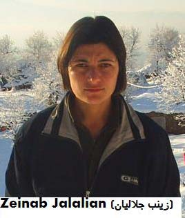

|
|
|
Browsing
Contact Us |
Campaigners |
Face to Face |
Tribune |
Interview |
News |
On the Web |
One Million |
Report
Farsi | Français | German | Italian | Spanish | العربية Also in this section
|
 For Atefeh or for All the Prisoners?By Jila Golanbar Monday 7 December 2009 Change for Equality: For whom should I write? For prisoners in Sistan and Baluchestan? For prisoners in Azarbaijan? For prisoners in Kurdistan? I am supposed to write for Atefeh. Dear Atefeh! Should I write for you or for Zeinab Jalalian? For Zeinab who on a daily basis senses the presence of the noose that is to be put around her neck? And she is miles away from you; in the center for youth offenders in Kermanshah. Should I write for Zeinab who when a mere child, fled the injustice of her home, taking refuge in a political party, instead? That is all that she has done. Zeinab’s geography is unlike yours. The land of Kurdistan and West Azarbaijan (Makoo, the city where Zeinab is from) has been rising up in response to the suffering that results from centuries of injustice. For centuries now, this land has been producing political prisoners, who are destined to spend their time in prison or in solitary confinement. As I write this letter, 15 Kurdish political prisoners who have been sentenced to death are bidding their time in prisons such as Evin in Tehran, or in Sanandaj, Kermanshah , West Azarbaijan or other locations. You see Atefeh?! You probably say to yourself, what violent sentences are issued in my land—the maximum sentence at that too! These maximum sentences are handed down for political activism or support of political groups, not armed conflict as you would imagine! Fortunately, for years now, perhaps for 20 years now, Kurdish political groups have ended armed struggles. Of course, I am not sure if they have substituted that struggle with discussion and dialogue between political parties, a dialogue that is also much needed among political groups within the state, whether it be reformist groups, or conservative political groups inside the country, who have yet to take up such peaceful strategies. Still there is one certainty in Kurdish cities, which those living in the Capital city also agree with: whenever the government seeks to justify the heavy sentences issued for its Kurdish citizens, it uses the terms “separatist” or “terrorist.” In response, citizens of other cities across the country use the same descriptions. It is strange that in this particular situation, everyone’s thinking and perspective happens to be in line with that of the Islamic Republic’s! Of course not all those in the Capital have succumbed to this way of thinking. So, if the situation was not as it is today, perhaps there would also be many letters from citizens in Kurdistan, Kermanshah, West Azarbaijan and Ilam, demanding your freedom, Atefeh . Now I am not sure if I should write for you Atefeh, or for Farzad Kamangar, Ali Heydarian, Farhad Vakili, Zeinab Jalalian, Habibollah Latifi, Shirkoo Moarefi, or the other nine people who have been sentenced to death by hanging? Certainly if our friends in Tehran, Isfahan or Shiraz had been born in Kurdistan instead our situations would be different and they would be the ones being labeled as separatists, or terrorists! Let us work to overturn all the execution sentences issued to political prisoners, then we can work for the unconditional release of all political prisoners in the different cities, no matter the charges pending against them, whether they be from Kurdish political groups, arrested in the aftermath of the elections, or members of the monarchist groups (if such a group even exists) or members of the participation front; or members of the Mojahedin of the Revolution or Mojahedin of the opposition, or whatever the label given to them. I know that Atefeh, you too will agree with me. |